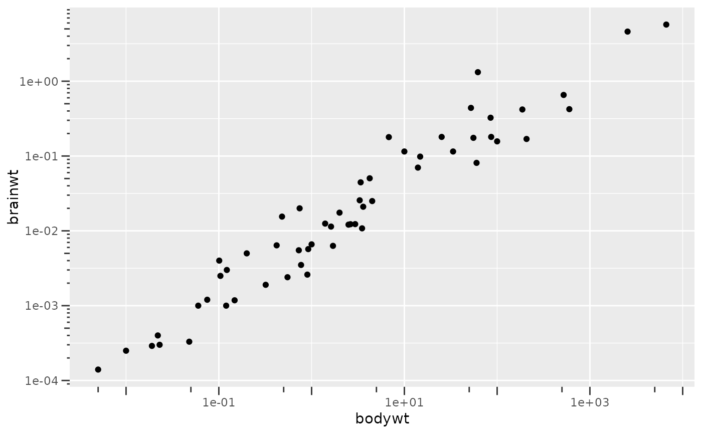
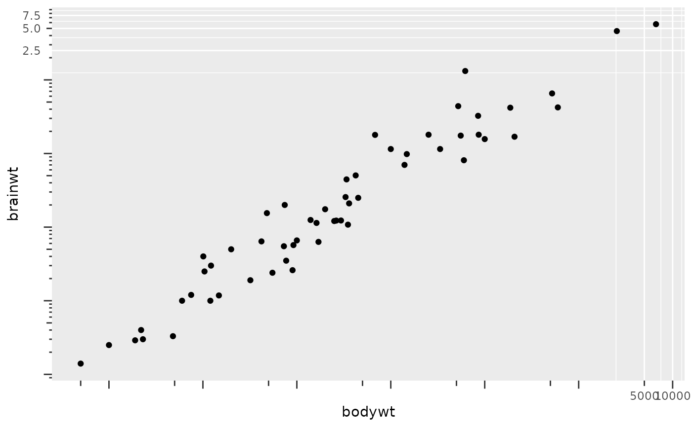
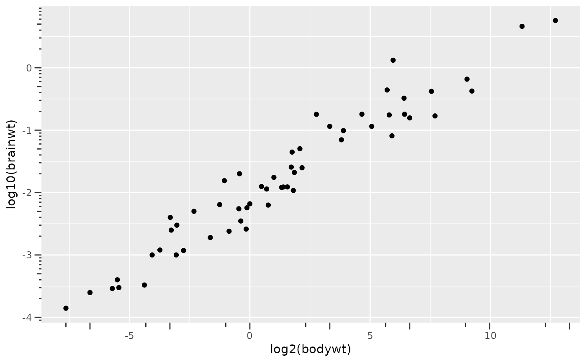
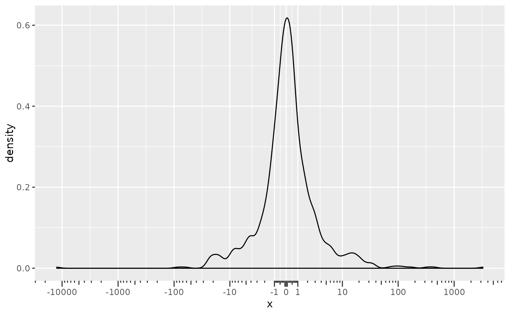
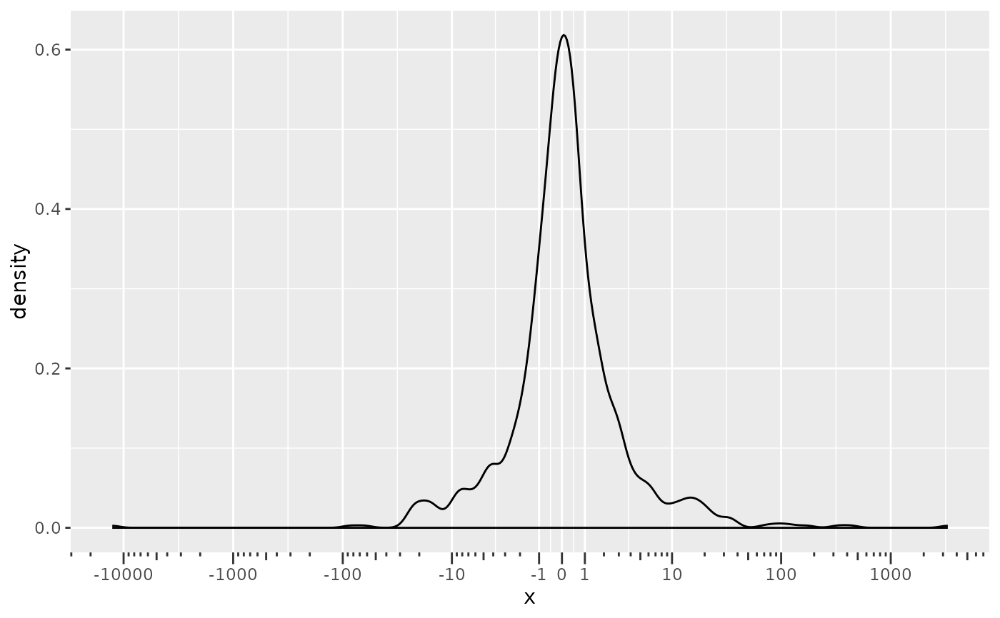

This axis guide replaces the placement of ticks marks at intervals in log10 space.
Usage
guide_axis_logticks(
long = 2.25,
mid = 1.5,
short = 0.75,
prescale.base = NULL,
negative.small = 0.1,
short.theme = element_line(),
expanded = TRUE,
cap = "none",
theme = NULL,
prescale_base = deprecated(),
negative_small = deprecated(),
short_theme = deprecated(),
...
)Arguments
- long, mid, short
A
grid::unit()object orrel()object setting the (relative) length of the long, middle and short ticks. Numeric values are interpreted asrel()objects. Therel()values are used to multiply values of theaxis.ticks.lengththeme setting.- prescale.base
Base of logarithm used to transform data manually. The default,
NULL, will use the scale transformation to calculate positions. Only setprescale.baseif the data has already been log-transformed. When using a log-transform in the position scale or incoord_trans(), keep the defaultNULLargument.- negative.small
When the scale limits include 0 or negative numbers, what should be the smallest absolute value that is marked with a tick?
- short.theme
A theme element for customising the display of the shortest ticks. Must be a line or blank element, and it inherits from the
axis.minor.tickssetting for the relevant position.- expanded
Whether the ticks should cover the range after scale expansion (
TRUE, default), or be restricted to the scale limits (FALSE).- cap
A
characterto cut the axis line back to the last breaks. Can be"none"(default) to draw the axis line along the whole panel, or"upper"and"lower"to draw the axis to the upper or lower break, or"both"to only draw the line in between the most extreme breaks.TRUEandFALSEare shorthand for"both"and"none"respectively.- theme
A
themeobject to style the guide individually or differently from the plot's theme settings. Thethemeargument in the guide overrides, and is combined with, the plot's theme.- prescale_base, negative_small, short_theme
![[Deprecated]](figures/lifecycle-deprecated.svg)
- ...
Arguments passed on to
guide_axischeck.overlapsilently remove overlapping labels, (recursively) prioritizing the first, last, and middle labels.
angleCompared to setting the angle in
theme()/element_text(), this also uses some heuristics to automatically pick thehjustandvjustthat you probably want. Can be one of the following:NULLto take the angles andhjust/vjustdirectly from the theme.waiver()to allow reasonable defaults in special cases.A number representing the text angle in degrees.
n.dodgeThe number of rows (for vertical axes) or columns (for horizontal axes) that should be used to render the labels. This is useful for displaying labels that would otherwise overlap.
orderA positive
integerof length 1 that specifies the order of this guide among multiple guides. This controls in which order guides are merged if there are multiple guides for the same position. If 0 (default), the order is determined by a secret algorithm.positionWhere this guide should be drawn: one of top, bottom, left, or right.
titleA character string or expression indicating a title of guide. If
NULL, the title is not shown. By default (waiver()), the name of the scale object or the name specified inlabs()is used for the title.
Examples
# A standard plot
p <- ggplot(msleep, aes(bodywt, brainwt)) +
geom_point(na.rm = TRUE)
# The logticks axis works well with log scales
p + scale_x_log10(guide = "axis_logticks") +
scale_y_log10(guide = "axis_logticks")

# Or with log-transformed coordinates
p + coord_trans(x = "log10", y = "log10") +
guides(x = "axis_logticks", y = "axis_logticks")

# When data is transformed manually, one should provide `prescale.base`
# Keep in mind that this axis uses log10 space for placement, not log2
p + aes(x = log2(bodywt), y = log10(brainwt)) +
guides(
x = guide_axis_logticks(prescale.base = 2),
y = guide_axis_logticks(prescale.base = 10)
)

# A plot with both positive and negative extremes, pseudo-log transformed
set.seed(42)
p2 <- ggplot(data.frame(x = rcauchy(1000)), aes(x = x)) +
geom_density() +
scale_x_continuous(
breaks = c(-10^(4:0), 0, 10^(0:4)),
transform = "pseudo_log"
)
# The log ticks are mirrored when 0 is included
p2 + guides(x = "axis_logticks")

# To control the tick density around 0, one can set `negative.small`
p2 + guides(x = guide_axis_logticks(negative.small = 1))
